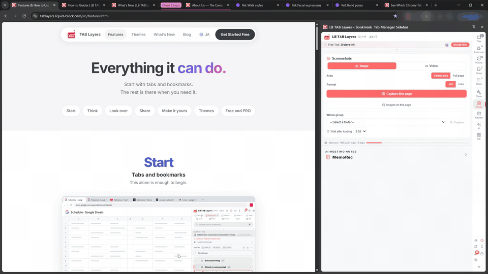
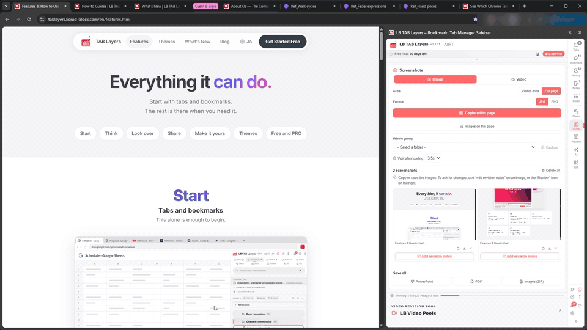
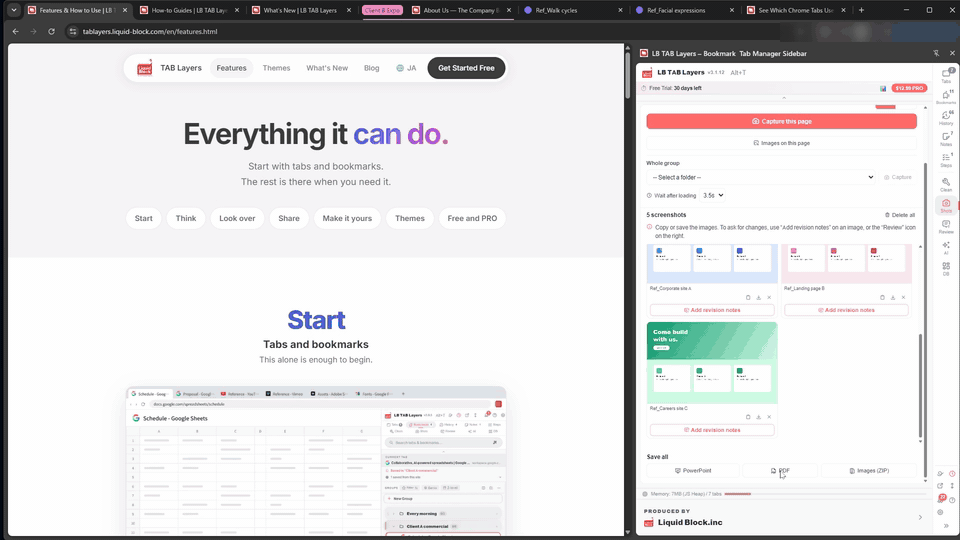
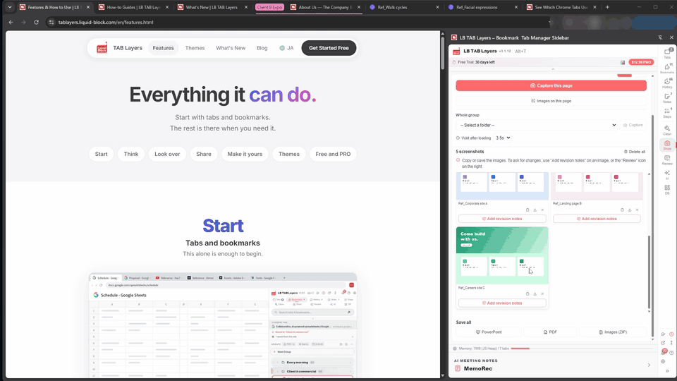
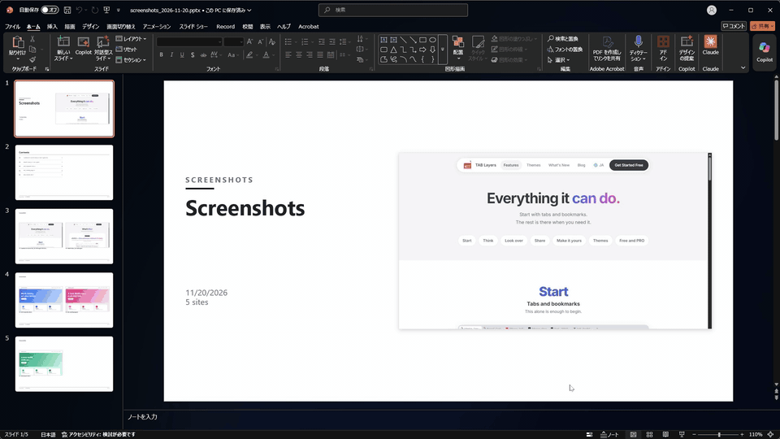
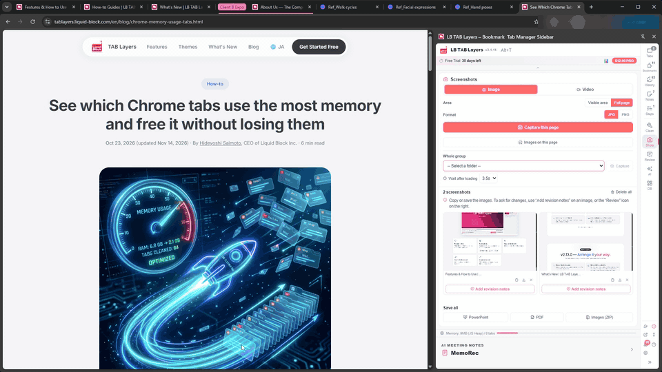
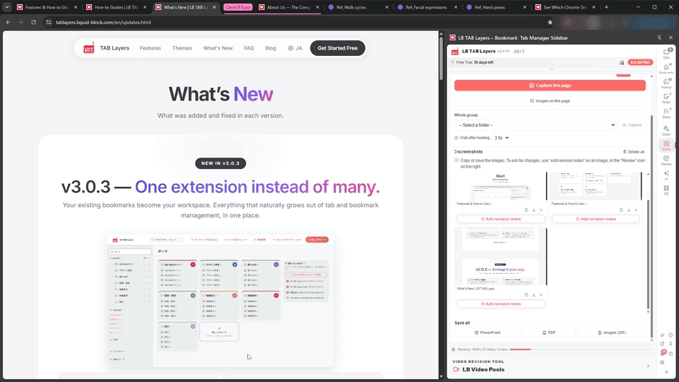
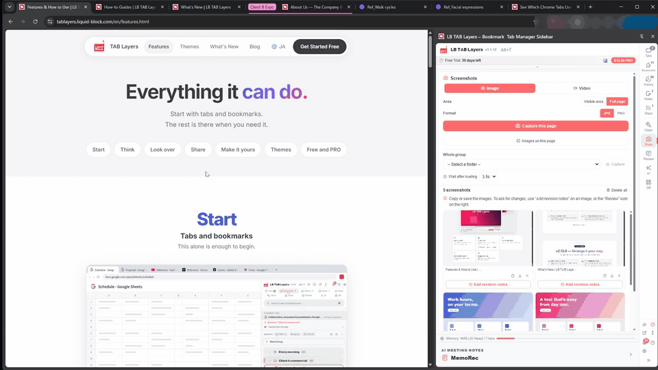
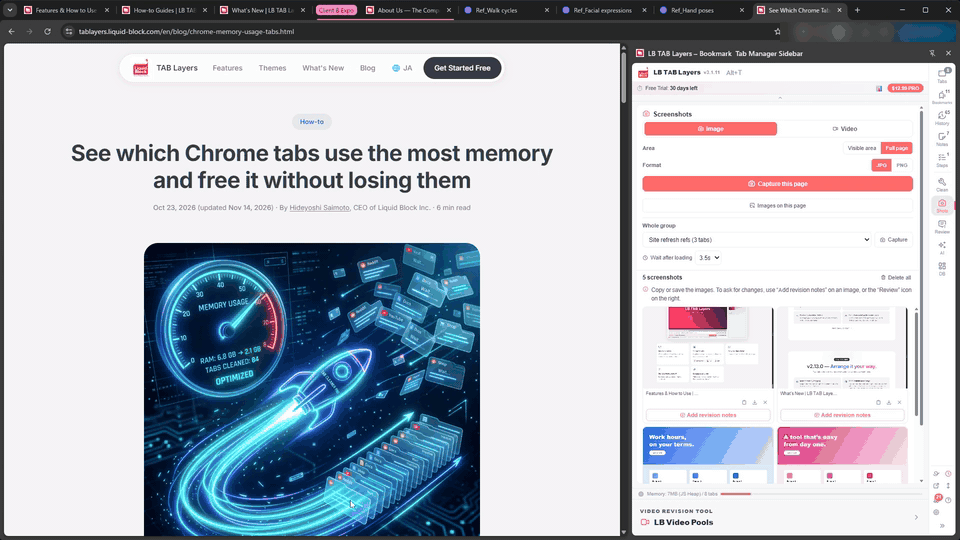
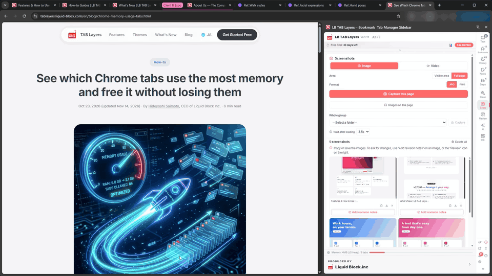

For people who explain by showing the screen, and people who build how-to guides or site overviews.
Capture this page
Capture the visible area, or the full page as a single image. JPG or PNG
Where: “Shots”
Click “Shots” in the right rail to open the capture view. Choose “Visible area” or “Full page”, and JPG or PNG, then click “Capture this page”. Your captures are still there the next time you open it.

Capture the current page with one button. The full page, top to bottom, can become a single image too.

After a few captures, save them all together as PowerPoint or PDF.

Save them all together as a PDF.

Or keep them as images, saved together in a ZIP.

Open it and your captures are laid out on slides.
Whole group
Open a group's pages in turn and capture them all
Where: “Shots” › Whole group
Choose a group and click “Capture”, and the group's pages are opened in turn and captured one by one. Choose a wait after loading of 1 to 5 seconds.

You can also capture all the pages in a group at once.
Managing captures
Copy, save or delete. They're still there the next time you open it
Where: Under each capture
For each capture you can copy it (as an image), save it or delete it. “Delete all” removes them all at once.
Mark up a screenshot PRO
Write notes with numbered pins on a capture
Where: “Add revision notes” on a capture
Click “Add revision notes” on a capture to open the markup screen. What you write goes into the page's revision sheet. PRO feature (available during the free trial).

Write your notes right on the capture.
Save all PRO
PowerPoint (5 layouts), PDF or ZIP
Where: “Save all”
From “Save all”, save your captures as PowerPoint, PDF or ZIP. For PowerPoint, choose from 5 layouts, such as one per slide or two side by side. PRO feature (available during the free trial).
Record as video
Record while the page scrolls automatically, or record your own actions (up to 10 minutes)
Where: “Shots” › “Video”
Switch to “Video” and choose between recording while the page scrolls automatically (auto-scroll) and recording your own actions (up to 10 minutes). Recordings can be saved as MP4.

You can also record a video while the page scrolls by itself.
Show image size PRO
Shows an image's original size and its displayed size
Where: Right-click an image
Right-click an image and choose “Show image size” to see its original size, displayed size and format. Click to copy the size. PRO feature.

Right-click an image to see its original size and its displayed size.
List the images on a page PRO
List a page's images, filter by size, then select and save
Where: “Images on this page”
Click “Images on this page” to list the images on the page. Filter by size or type, and save the selected images together. PRO feature.

List the images on a page and filter them by size.